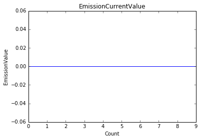

[1]:
import time
import matplotlib.pyplot as plt
import datetime
from PyJEM.offline import TEM3
# 出力する表をNoteBook内に表示する
%matplotlib inline
[2]:
def emission_log(count, sleeptime=1):
"""
| A function that acquires the current emission value and writes it to the log file.
| arg1: number of trials
| arg2: Emission acquisition sleep time (s)
| output: None
"""
_gun_instance = TEM3.GUN3()
file = open("log.txt", "w")
x = []
y = []
for i in range(count):
value = _gun_instance.GetEmissionCurrentValue()
x.append(i)
y.append(value)
print("Emission Value: " + str(value))
##logfileへの書き込み
date = datetime.datetime.today()
write_data = date.strftime("%Y/%m/%d_%H:%M:%S ") + "EmissionValue: " + str(value) + "\n"
file.write(write_data)
time.sleep(interval_time)
file.close()
plt.plot(x, y, "-")
plt.xlabel("Count")
plt.ylabel("EmissionValue")
plt.title("EmissionCurrentValue")
plt.show()
[3]:
def open_log(fileName):
file = open(fileName, "r")
for row in file:
print(row)
file.close()
[4]:
count = int(input("試行回数: "))
if count == None:
print("Please set the number of trials.")
count = 1
interval_time = int(input(("Interval time: ")))
if interval_time == None:
interval_time = 1
emission_log(count,time)
試行回数: 10
Interval time: 1
Emission Value: 0.0
Emission Value: 0.0
Emission Value: 0.0
Emission Value: 0.0
Emission Value: 0.0
Emission Value: 0.0
Emission Value: 0.0
Emission Value: 0.0
Emission Value: 0.0
Emission Value: 0.0

[ ]: